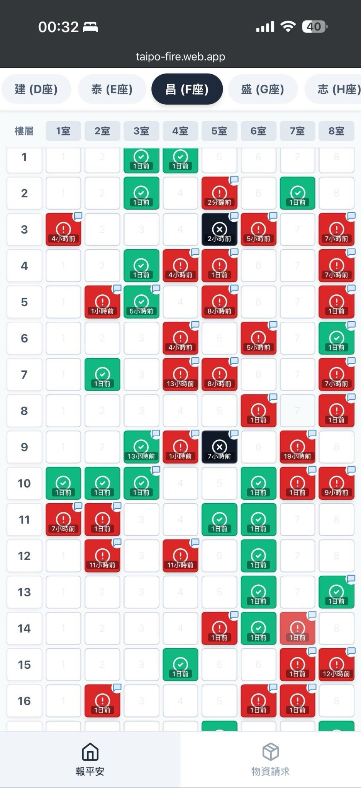
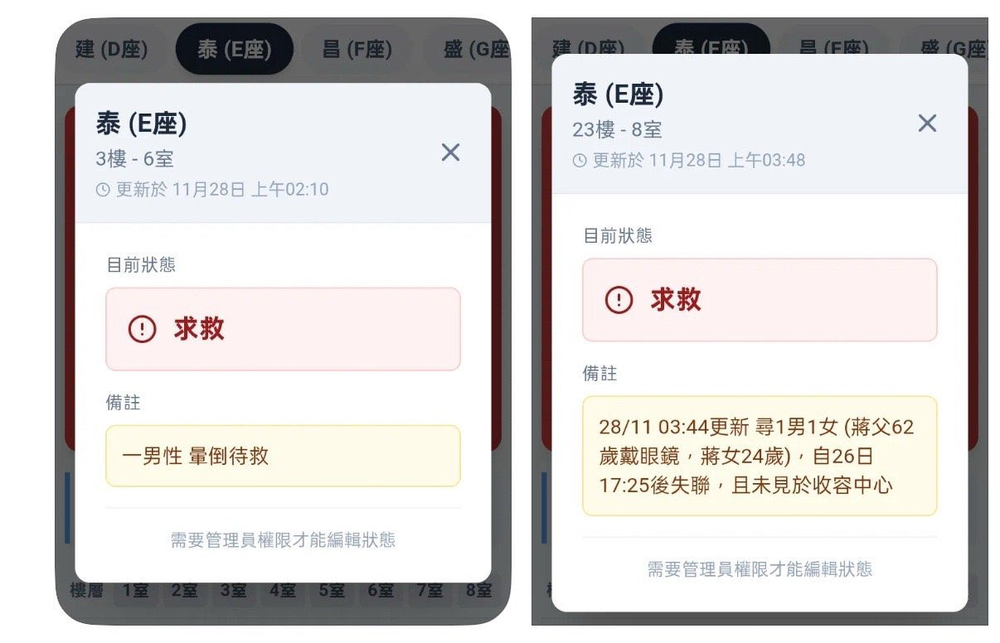

☯️🧬暗号通貨戦士霊狐🏳️⚧️
@Cheese_Ghostfox
RT @yuyy614893671: 【转自微博】这次大火，香港网民做了一件事，非常非常非常非常棒，就是这款连夜上线的app。
流程：
1. Request 由 Google form 提交
2. 志愿者核对信息的真实性和准确性
3. 核实后的信息进入app, 红色代表失联，…


金融汪
@yuyy614893671
【转自微博】这次大火，香港网民做了一件事，非常非常非常非常棒，就是这款连夜上线的app。
流程：
1. Request 由 Google form 提交
2. 志愿者核对信息的真实性和准确性
3. 核实后的信息进入app, 红色代表失联，绿色代表无恙，黑色是遇难[祈祷]
4. 信息同步到前线救火员，进行定点救援 https://t.co/wxl4g4RgTb